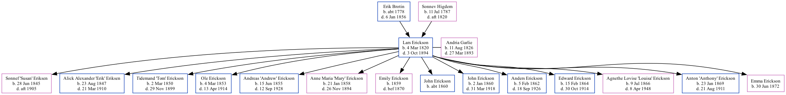

Lars Erickson 1820 - 1894
[ Home ] | [ Surnames Index ] | [ Family History ]The child of Erik Brotin and Sonnev Higdem, , Lars was the 3 times great-grandfather of Stephanie Hardesty (née Teten), was born in Nord Aurdal, Valdres, Oppland, Norway on Mar 4, 18201 and married Andria Garlie (with whom he had 14 children: Sonnef "Susan", Alick Alexander "Erik", Tidemand "Tom", Ole L, Andreas "Andrew", Anne Maria "Mary", Emily, John, JOHN L, Anders, Edward L, Agnethe Lovise "Louisa", Anton "Anthony" and Emma Thorine) in Aurdal, Oppland, Norway on Jul 27, 1845. In 1880, he was living in Cato Falls, Manitowoc, Wisconsin, USA1.
He died on Oct 3, 1894 in Cato, Wisconsin2.
Parents
- Erik Olson Thonseie Brotin was born c. 1778
- Sonnev Guttormsdatter was born on Jul 11, 1787
Children
- Sonnef "Susan" was born on Jun 28, 1845
- Alick Alexander "Erik" was born on Aug 23, 1847
- Tidemand "Tom" was born on Mar 2, 1850
- Ole L was born on Mar 4, 1853
- Andreas "Andrew" was born on Jun 15, 1855
- Anne Maria "Mary" was born on Jan 21, 1858
- Emily was born in 1859
- John was born c. 1860
- JOHN L was born on Jan 2, 1860
- Anders was born on Feb 5, 1862
- Edward L was born on Feb 15, 1864
- Agnethe Lovise "Louisa" was born on Jul 9, 1866
- Anton "Anthony" was born on Jan 23, 1869
- Emma Thorine was born on Jun 30, 1872
Citations
- 1880 United States Federal Census Ancestry.com Operations Inc (Age: 60; Marital Status: Married; Relation to Head of House: Self)
- Wisconsin Deaths, 1820-1907 Ancestry.com Operations Inc
Family Tree
Data (GEDCOM) maintained by Jay Weston Hannah, Omaha, Nebraska, USA.
Website generated by ged2site. Last updated on Jun 18, 2024.